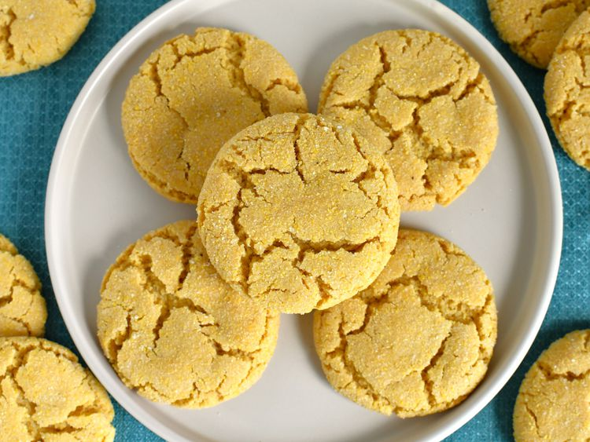

Cornmeal Cookie

Description
Simple and easy recipe for making a delicious and yummy Cookie
Cornmeal Cookies Recipe
Ingredients
- 1 cup cornmeal
- 1 cup all-purpose flour
- ½ tsp baking powder
- ¼ tsp baking soda
- ¼ tsp salt
- ½ cup unsalted butter, softened
- ¾ cup sugar
- 1 large egg
- 1 tsp vanilla extract
- ¼ cup milk
Steps
- Preheat oven to 350°F (175°C). Line a baking sheet with parchment paper.
- In a bowl, whisk together cornmeal, flour, baking powder, baking soda, and salt.
- In another bowl, cream the softened butter and sugar until light and fluffy.
- Beat in the egg and vanilla extract until well combined.
- Gradually add the dry ingredients to the wet ingredients, mixing until just combined.
- Add the milk and mix until the dough comes together.
- Drop spoonfuls of dough onto the prepared baking sheet, spacing them about 2 inches apart.
- Bake for 10-12 minutes, or until the edges are golden brown.
- Cool on the baking sheet for a few minutes, then transfer to a wire rack to cool completely.